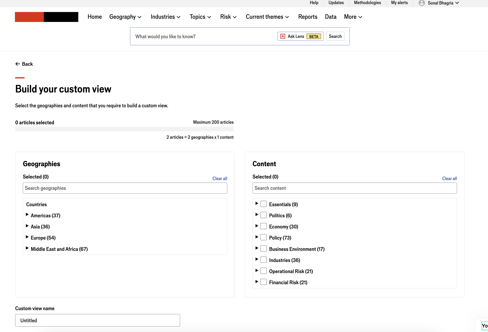

A leading B2B intelligence platform · 2023
Designing a custom report builder
for expert users who couldn't
find what they needed
Existing reports were too long, too generic, or too broad for the analysts, risk managers, and strategists who needed precise, geography-specific intelligence quickly. I led the design of a custom report builder from discovery to launch — giving users control over what they read, how it's structured, and who they share it with.
335
Client accounts
40% of all platform clients used Custom View — including Deloitte, World Bank, and JP Morgan
65%
Journey success rate
472 of 727 journeys resulted in a successfully created custom report
27%
Trial conversion
Trials using Custom View converted at 27% vs 19% for non-users — directional evidence of value
3.6k
MoM report growth
Month-on-month increase in Custom View reports consumed following August 2023 rebound
The brief
Reports that didn't fit the people reading them
The problem worth solving
The platform's existing reports were the primary way users accessed intelligence content. But reports were built for a broad audience — too long for users who needed a quick brief, too generic for analysts tracking a specific geography or risk theme, and impossible to tailor for the way organisations actually worked.
Users struggled to compare analysis across geographies and topics because the content structure didn't support it. They couldn't reorder sections, filter to what was relevant, or save a configuration for future use. Every report consumption was a manual effort to find signal in noise.
The opportunity was clear: give users control. Let them build a report that matched their actual need — the geographies they were watching, the topics that mattered to their role, the time period they were briefing on — and make that configuration reusable.
I led this project from the initial discovery brief through research, hypothesis generation, user goal mapping, wireframing, testing, and launch. I worked within a cross-functional squad of developers and a product manager, owning the design and research end to end.
Process
Discovery through launch
Nine steps from problem to shipped product
01
Project overview
Defined scope with PM — what success looked like, constraints, and what was out of scope from the start.
02
Problem understanding
Desk research, analytics review, and stakeholder interviews to frame the problem precisely before any design.
03
Hypothesis generation
12 user hypotheses generated from research — covering every job-to-be-done we expected users to bring to the feature.
04
User research
Exploratory interviews and affinity mapping across user types — analysts, risk managers, strategy teams.
05
User goals & tasks
Four user goals mapped to task flows — covering single-geography reports, multi-geography comparison, template reuse, and content editing.
06
Wireframes
Three layout concepts explored — report builder UI, output view, and multi-geography template mode.
07
Final concepts
High-fidelity designs produced for testing. Final screens under NDA — wireframes shared here.
08
UX testing
Two rounds — one pre-launch, one post-launch. Post-launch iteration driven by analytics and Hotjar recordings.
09
Launch & iteration
Shipped mid-2023. Monitored analytics post-launch and iterated on a journey that was bouncing — discovered via Hotjar.
→
Continuous learning
Post-launch data shaped the metrics story — both what worked and what remained directional.
Understanding the problem
What research confirmed
From observation to design direction
Problem 01
Reports are too long and too generic
- Reports are the primary route to platform content — but existing ones don't serve individual needs
- Users spend significant time manually filtering content that isn't relevant to their brief
- Length and breadth of reports works against time-pressured users
Problem 02
Cross-geography comparison is broken
- Users tracking multiple geographies had no way to see parallel analysis in one place
- Switching between separate country reports broke the analytical thread
- No way to save a multi-geography configuration for reuse
Problem 03
No control, no reuse
- Users couldn't reorder sections, remove irrelevant content, or add content from other reports
- Every brief required starting from scratch — no templates, no saved configurations
- Sharing was limited — no way to send a curated view to a colleague or manager

Exploratory user research — affinity mapping across user types and job-to-be-done themes
Hypotheses
12 ways users might use this
Generating hypotheses before designing anything
Before any wireframe was drawn, I generated 12 user hypotheses from the research — each framed as a job the user would bring to the feature. This kept design decisions grounded in real user intent rather than assumed functionality.
Curation hypotheses
Users want to pick articles across different topics to form a single custom report
Users want to create one report from a featured report across multiple geographies
Users want to create one report from multiple reports for a single geography
Users want to curate content for a specific date range
Users want to include daily events coverage — latest developments, must-reads, insights
Users want to group content by geography first
Control & reuse hypotheses
Users want to reorder and show only relevant sections in existing featured reports
Users want to add and remove sections so reports mirror their organisation's structure
Users want to save a template and reuse it quickly for different geographies
Users want to get alerted when content in a saved custom report is updated
Users want to take away relevant content in the quickest way possible
Users require flexibility to create reports for multiple geographies at once
User goals & task flows
Four goals that shaped the design
From hypotheses to concrete user journeys
Goal 1a
Quick custom report
As an analyst, I need to create a custom report on economic outlook for Sri Lanka, Indonesia, and India for the next six months.
Goal 1b
Reuse saved template
I've been asked to look for the same economic outlook for Poland and Germany — reuse the template from 1a for a new set of geographies.
Goal 2a
Edit existing report
I need a short brief from the Business Environment and Long Term Forecast for UK — remove unnecessary sections for a strategy team briefing.
Goal 2b
Edit and add content
I need political, policy and economic analysis for China — focus on risk scenarios and create a monthly report with new content added.

Four user goals mapped to task flows — the foundation for every design decision that followed
Design
From blank page to builder
Wireframes — three layouts explored
The core design challenge was a three-panel builder: select content, select geography, select report type and time period — then generate. The output needed to be immediately readable and shareable. I explored three layout approaches before arriving at the solution that best balanced flexibility with simplicity.

Live product — Custom View report builder · Geographies and content selection interface
"The hardest part wasn't designing the builder — it was designing the output. A custom report is only useful if what comes out is as readable as what goes in."
Testing
Two rounds — before and after launch
How testing shaped what shipped
Round 1 — pre-launch
Testing the builder interaction
- Moderated usability sessions with representative users across the four goal scenarios
- Key finding: users expected the geography selector to behave like a search, not a browse — navigation redesigned accordingly
- Time-period selector caused confusion — labelling and defaults iterated before final build
Round 2 — post-launch
Analytics and Hotjar
- Tracked journey completion rates post-launch via analytics
- Hotjar recordings revealed one journey where users were bouncing unexpectedly
- Iterated on that specific flow — a small design change that significantly improved completion
- Ongoing analytics monitoring across all entry routes to understand how users were discovering the feature

UX testing synthesis — two rounds of research mapped against task flows
Outcomes
What the data actually showed
Honest metrics — strengths and open questions
922
Unique users
7% of all platform users engaged with Custom View. 335 client accounts — 40% of all platform clients — used the feature over the analysis period.
65%
Journey completion
472 of 727 journey starts resulted in a successfully created custom view. 35% were incomplete — a signal that onboarding and discoverability had room to improve.
46%
Best entry route
Report navigation and geography tabs drove 46% of entries — the most effective discovery path. External routes like bookmarks drove only 5%.
58%
Single geography
58% of custom views covered a single geography; 42% used multiple — showing the feature served both casual and advanced use cases.
27%
Trial conversion lift
Trials using Custom View converted at 27% vs 19% for non-users. Directional evidence — small sample size means this should be treated as a signal, not a proof.
3.6k
MoM report rebound
A 3.6k month-on-month increase in custom view reports consumed in August 2023 — a strong recovery after a 4k drop the prior month.
What the data didn't show — and why that matters
Post-launch analysis found no direct evidence that Custom View drove renewal or was a predictive signal for retention. In some segments, usage was actually higher among churned accounts — suggesting power users engaged deeply but didn't always renew for other reasons. This was an important finding: feature engagement and business retention are related but not the same metric. It shaped how we framed success for subsequent feature development — and reinforced the need for a more holistic engagement strategy beyond individual feature adoption.
Reflection
What I'd do differently
Honest retrospective
The 35% incomplete journey rate was the metric that stayed with me. In hindsight, I'd have invested more in the empty state and onboarding experience — what users see before they've committed to building anything. We designed the builder well, but didn't design the moment of first encounter well enough. Discoverability and first-use confidence were undertreated.
I'd also have been more deliberate about defining success metrics upfront with the PM — specifically distinguishing between feature engagement metrics and business outcome metrics. The post-launch data was rich, but we didn't have a pre-agreed framework for interpreting it. That created some ambiguity about what the feature had actually achieved, even when the signals were largely positive.
Confidentiality note — The platform and product names referenced in this case study are subject to a non-disclosure agreement. All names have been anonymised. Final high-fidelity designs and production screens are not shown as they remain the intellectual property of the organisation. Wireframes and research artefacts shown here are from personal working files produced during the design process.